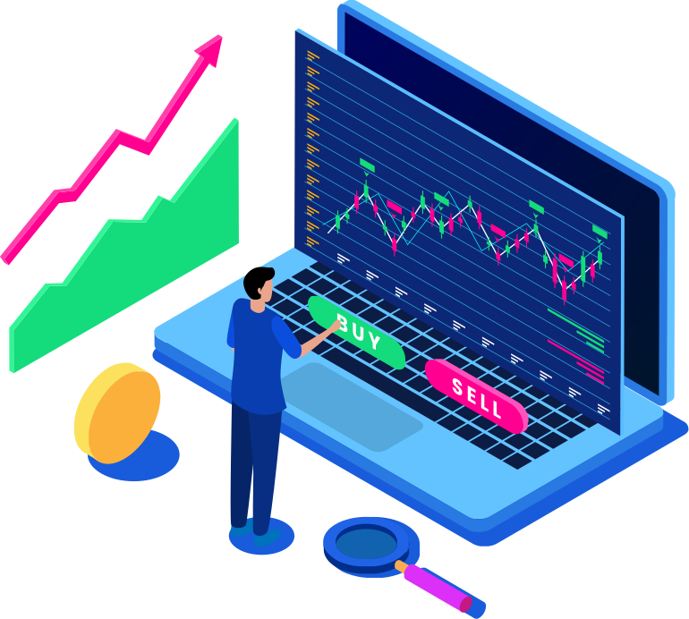

Apathetic Automated Trading System is the first automated social trading platform built on AI, machine learning, and pattern recognition.
Apathetic uses deep learning to learn market movement for the past 10 to 15 years for the selected stock option.
Chat rooms allow users to communicate with other investors and discuss potential investment opportunities and trends.
We minimize emotions in the trading process. Once you choose your strategy, trade orders are made automatically. This means no more hesitation before trading or overtrading by buying and selling at every perceived opportunity.
We are here to show you that trading is for everyone, from novice traders to people too busy to spend hours analyzing the markets. Enter new markets, and discover trading communities in our social rooms.
Once you’ve set up your automated trading strategy, Apathetic will monitor financial market prices and automatically trade when the parameters you selected are met.
AI and deep learning take the burden of tedious research and remove the mystery and confusion of trading. With the rules of the trade firmly built into the selected parameters, automated trading takes the emotion out of your trading decisions.
We use signals from the market evolution in the past 10-15 years to give you the knowledge to build your strategy. With chat rooms and network features built-in, we offer the most efficient and transparent automated social trading system on the market.
What stops people from trading is the fact they don’t know where to start. Researching assets and interpreting technical charts to a level where you’ll be able to make successful investment decisions is daunting even for the most passionate novice.
Apathetic comes with a complete automated trading solution. Both experienced investors and novice traders are able to use our charting software, AI scanner, and pattern recognition to learn about industry trends over the years to choose their automated trading strategy accordingly
The first trading system to merge automated and social trading into one platform.
Trades are executed automatically, no matter how much time you can spend monitoring them.
Automated, planned strategies eliminate the risk of emotional decisions.
Social rooms and chat help you find new opportunities and discuss trends with likeminded investors.
No need for manual execution, you can make multiple real-time trades at the same time.
With automated trading, you can trade in multiple accounts at the same time and easily diversify your portfolio.